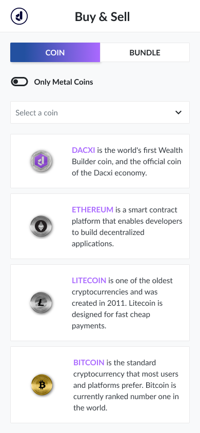
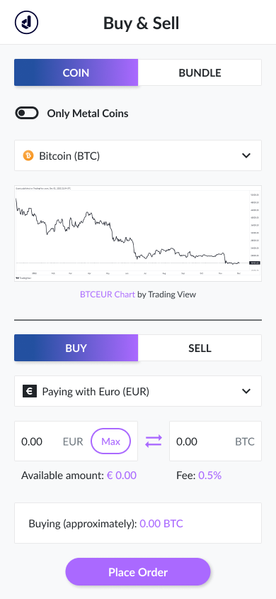
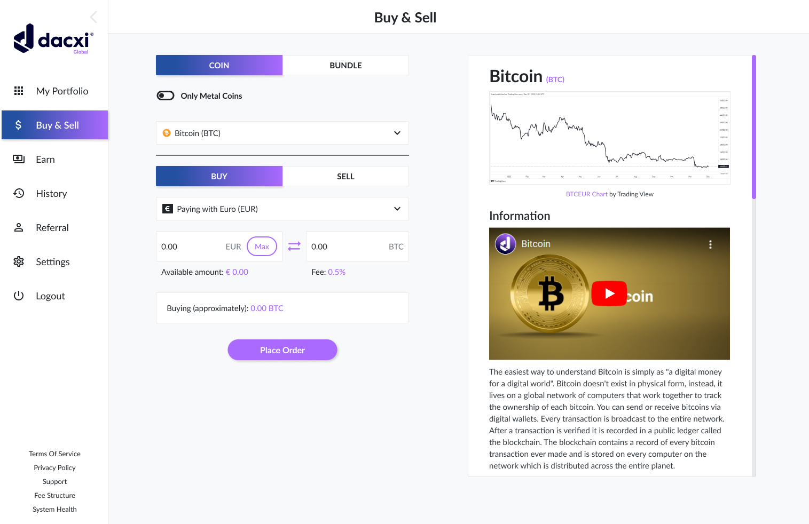

Sobre o projeto
A Dacxi é uma empresa que atua no mercado de cripto-economia e tokenização de ativos. No geral, para este redesign, reuni algumas referências e estilos de cores do website principal e alguns recursos da própria plataforma (imagens e logotipo, por exemplo). O projeto pode ser também encontrado no Behance clicando aqui e o arquivo Figma completo pode ser acessado clicando aqui.

Todo o user-flow foi feito mudando majoritariamente os componentes visuais trazendo um aspecto mais moderno e clean para a plataforma. Todas as telas foram feitas com a ferramenta de auto-layout do Figma e adicionei alguns componentes para que o protótipo funcione com mais fluidez. A mudança mais estrutural que fiz para as versões desktop e mobile foi tornar a entrada "digite valor" visualmente mais agradável e compreensível para o usuário, trazendo ambos os lados da transação em apenas uma linha.
A atual versão mobile da plataforma dispensa tanto as sugestões de moedas quanto as informações que aparecem no lado direito da tela na versão desktop. Tentei mantê-los e adaptá-los neste redesign.


